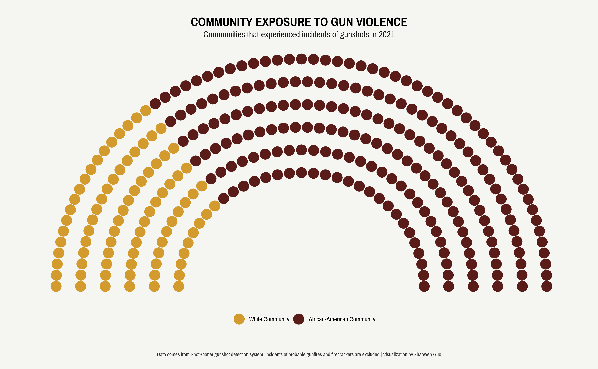
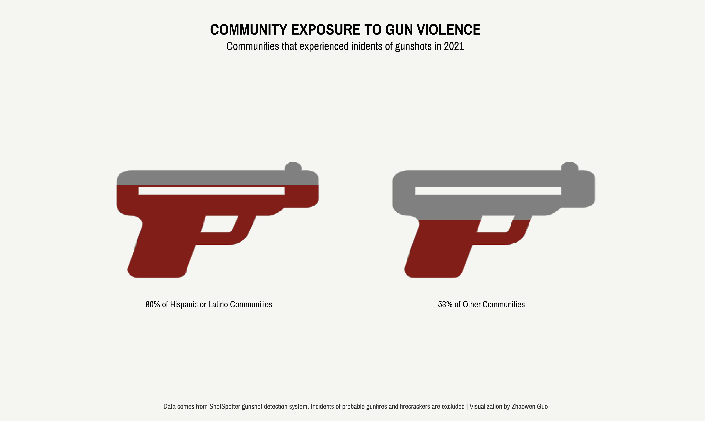

Gun violence disproportionately and overwhelmingly affects communities of color, resulting in significant racial disparities in exposure to gun violence. To tell stories of racial justice in gun violence, it’s crucial to use compelling visuals. While many reports have relied on bar charts and stacked bar charts to illustrate unequal gun exposure, using them exclusively may not always be visually engaging. In this blog post, we will explore some alternative ways to visualize racial justice in gun violence. My full code can be accessed here.
{kind=link}
{kind=link}
One effective way to display racial disparities in gun violence is using a parliament chart, which is suitable for categorical data in a two-dimensional grid format. Let’s use recorded gunshot incidents in Washington DC in 2021 as an example. After cleaning the data, it is evident that out of the 555 communities in the city, 293 experienced gun violence. Shockingly, over 70% of these communities were African-American, highlighting a clear instance of racial disparity.
To convey this message using a parliament chart, we can use the ggparliament package which just takes two steps to get our work done. Firstly, we need to create a data frame with the categorical data we want to visualize, which in this case is the number of communities per racial group that have been exposed to gun violence. Next, we can convert this data frame to an appropriate structure for creating a parliament chart using the parliament_data() function. In the second step, we can specify the shape of the parliament chart (circle, semicircle, square, or rectangle), the number of rows to display, and the counts for each category.
```{r}
community_gunshot <- data.frame(groups = c("White Community", "African-American Community"),
count = c(84, 209),
colors = c("#d39a2d","#591c19"))
community_gunshot_data <- parliament_data(election_data = community_gunshot,
type = "semicircle",
parl_rows = 6,
party_seats = community_gunshot$count)
```Once we have completed these two steps, we can then use the data frame with ggplot and add a layer called geom_parliament_seats(). We can also add whatever aesthetics we desire. And voila, our parliament chart is ready to be displayed!

When attempting to replicate this graph by comparing Hispanic/Latino communities to others, an issue arose: there are only five Hispanic/Latino communities out of the 555 communities. If we display the raw counts of communities experiencing gun violence, this could give the false impression that non-Hispanic or non-Latino communities had greater exposure to gun violence. However, in reality, four out of the five Hispanic/Latino communities experienced gun violence. As a result, it is crucial to display proportions rather than raw counts when comparing ethnic communities.
What alternative visualization options do we have besides using bar charts? One idea that came to mind was using filled icons, such as handguns, with different heights of filled colors to represent the proportions of communities that experienced gun violence. However, implementing this idea was more time-consuming than anticipated. I would appreciate any suggestions on how to streamline this process.
My approach was to combine the echarts4r and the ggplot workflows. echarts4r is a powerful tool for creating interactive visualizations and includes a handy function called e_pictorial(), which allows us to incorporate any images we want to plot, such as a handgun icon in our case. To use an image, we simply need to provide the path to the svg file.
```{r}
icon_path = "path://M544 64h-16V56C528 42.74 517.3 32 504 32S480 42.74 480 56V64H43.17C19.33 64 0 83.33 0 107.2v89.66C0 220.7 19.33 240 43.17 240c21.26 0 36.61 20.35 30.77 40.79l-40.69 158.4C27.41 459.6 42.76 480 64.02 480h103.8c14.29 0 26.84-9.469 30.77-23.21L226.4 352h94.58c24.16 0 45.5-15.41 53.13-38.28L398.6 240h36.1c8.486 0 16.62-3.369 22.63-9.373L480 208h64c17.67 0 32-14.33 32-32V96C576 78.33 561.7 64 544 64zM328.5 298.6C327.4 301.8 324.4 304 320.9 304H239.1L256 240h92.02L328.5 298.6zM480 160H64V128h416V160z"
hispanic = data.frame(ethnic = c("Hispanic", "Others"),
ratio = c(40, 25), # scale down the numbers 80 and 53
path = c(icon_path,
icon_path))
# create a filled image graph
hispanic %>%
e_charts(ethnic) %>%
e_x_axis(splitLine=list(show = FALSE),
axisTick=list(show=FALSE),
axisLine=list(show=FALSE),
axisLabel = list(show=FALSE)) %>%
e_y_axis(max=100,
splitLine=list(show = FALSE),
axisTick=list(show=FALSE),
axisLine=list(show=FALSE),
axisLabel=list(show=FALSE)) %>%
e_color(color = c('#811e18','grey'), background = "#f5f5f2") %>%
e_pictorial(ratio, symbol = path, z=10, name = "",
symbolBoundingData= 50, symbolClip= TRUE) %>%
e_pictorial(ratio, symbol = path, name= '',
symbolBoundingData= 50) %>%
e_legend(show = FALSE) %>%
e_grid(bottom = "35%")
```However, one drawback is that echarts4r does not work directly with ggplot themes, so I couldn’t adjust the aesthetics to match my other ggplot charts. To work around this, I created a graph with two filled handgun icons and used it as a background image in ggplot. I then added supporting annotations to enhance the visualization.
To annotate the previously downloaded graph, I used the magick and ggpubr packages, which allowed me to easily add text and other annotations in the style of ggplot. The process involved importing the graph as an image using magick, and then using ggpubr to overlay ggplot-style text annotations on top of the image. To ensure that the annotations were positioned correctly, I specified the appropriate x- and y-coordinates for each annotation.
```{r}
library(magick)
library(ggpubr)
background <- image_read("ethnic-gun.png")
xaxis <- data.frame(xaxis = c(1, 2, 3),
labels = c("", "", ""))
yaxis <- data.frame(yaxis = c(1, 2, 3),
labels = c("", "", ""))
ggplot() +
background_image(background) +
geom_text(data = xaxis, aes(x = xaxis, y = 0, label = labels)) +
geom_text(data = yaxis, aes(x = 0, y = yaxis, label = labels)) +
labs(x="",y="") +
theme(axis.ticks.x = element_blank(),
axis.text.x = element_blank(),
axis.ticks.y = element_blank(),
axis.text.y = element_blank(),
plot.background = element_rect(fill = "#f5f5f2", color = NA)) +
annotate(geom = "text", x = 0.8, y = 0.8, label = "80% of Hispanic or Latino Communities",
size = 15, family = "Pragati Narrow") +
annotate(geom = "text", x = 2.1, y = 0.8, label = "53% of Other Communities",
size = 15, family = "Pragati Narrow") +
annotate(geom = "text", x = 1.45, y = 2.95, label = "COMMUNITY EXPOSURE TO GUN VIOLENCE",
size = 26, family = "Pragati Narrow", fontface = "bold") +
annotate(geom = "text", x = 1.45, y = 2.82, label = "Communities that experienced inidents of gunshots in 2021",
size = 19, family = "Pragati Narrow") +
annotate(geom = "text", x = 1.5, y = 0, label = "Data comes from ShotSpotter gunshot detection system. Incidents of probable gunfires and firecrackers are excluded | Visualization by Zhaowen Guo",
size = 12, family = "Pragati Narrow",color = "grey20")
ggsave("dc_ethnic.png", width = 14, height = 14/1.618, units = "in")
```Here’s the final output! With this filled icon chart (sometimes referred to as a pictogram chart), it is easy to see that Hispanic/Latino communities are significantly impacted by gun violence compared to other ethnic groups.
